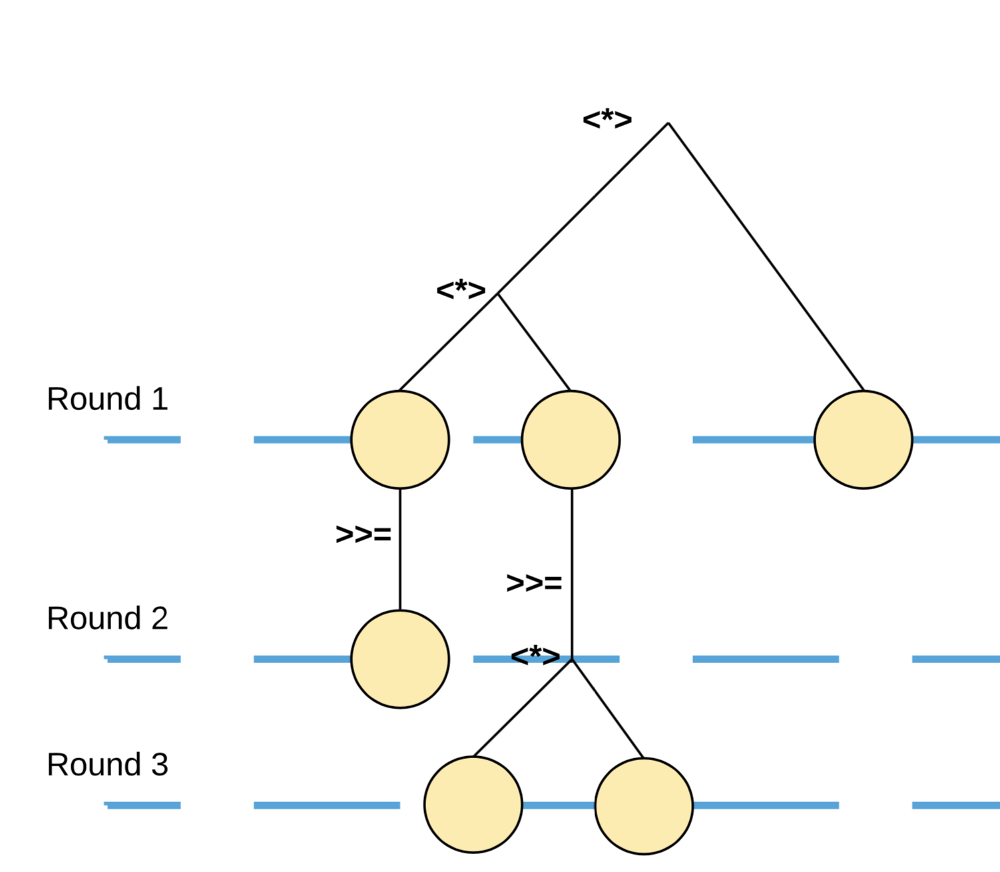

The State of Haskell in Ethereum
Introduction
Blockchain vs Cryptocurrency
- Cryptocurrency ~ programmable money
- access control
- utilization
- scarcity
- Blockchain ~ ??
- process digital assets
- cryptographic
- distributed
Blockchains in Production
- Existing: Bitcoin, Ethereum
- Nascent: Kadena, Cardano SL, RChain
Ethereum Today
- Only public, permissionless, 2nd generation blockchain in production
- Largest developer community
- Will be here for a while…
Example Applications
- Tokenized Assets
- Digital Art – SuperRare, CryptoKitties
- Intellectual Property / Licensing
- Digital Registries
Data Access and Streaming
The Problem
- Node’s primary concern is block production, propogation, and verification
- Internal storage model is cryptographic (Merkle) trees
- Query performance not a concern, better to use production grade databases where applicable (e.g. Postgres, Elasticsearch)
Block Model
{
hash: "0xfc31...",
number: 5840941,
parentHash: "0x6a4d...",
receiptsRoot: "0x17e8...",
stateRoot: "0x5d10...",
logsBloom: "0x4503...",
transactionsRoot: "0xe7f0...",
transactions: [
"0x5465...",
"0x7ce7...",
...
],
...
}Takeaway: Lots of roots
Ethereum Progression
Blocks carry an index into a storage tree, called a state root
** Images shamelessly adapted from Git Internals by Scott Chacon
Ethereum Progression
Block progression gives a series of indices into storage
Ethereum Progression
- want to stream relevant application updates, events
- want to access history (e.g. indexing, auditing, replaying)
- want to submit transactions to update this storage

What Are These Event Logs Precisely?
- When Alice transfers Bob a token, balances in contract storage change but this act of exchange is not stored in contract.
- Outside world notified via subscriptions to contract’s transfer topic.
Functional Tools
Core Functional Ethereum Libraries
hs-web3
- purescript-web3
- chanterelle
High Level Overview
Minimal web3 Library Requirements
- query blockchain metadata (blocks, transactions, etc)
- interact with smart contracts
- stream logs
Interacting with Smart Contracts
- Ethereum smart contracts expose an interface
- Example: ERC20 standard

Interacting with Smart Contracts (ABI)
- Compliation artifact called ABI
- JSON object specifying interface:
- function calls
- events / topics
- Straightforward to generate FFI with Template Haskell
Interacting with Smart Contracts (QuasiQuoter)
Interacting with Smart Contracts (Encodings)
- Ethereum has its own encoding schema (ABI)
- transactions are serialized closures
- events / topics
- codecs derived generically (
generics-sop) - instances declared in QQ
Conclusion:
All datatypes and FFI needed to interact with any Smart Contract can be generated from the QuasiQuoter and used natively in any application.
What does it look like?

Streaming Logs
Machines - Ceci n’est pas une pipe
- similar libraries:
- conduit
- purescript-coroutines
- pipes
- Idea: build up data processing machines1, compose them, join them, split them.
- Useful for cases when streaming from one IO source to another with intermediate processing phases.
1. Usually build something called a Plan, which is a DSL describing what the machine should do and how to terminate.
Filter Type Description
We send out a description of what we want to monitor.
-- | Filter has a phantom type for the specific event.
data Filter e =
Filter { address :: [Address]
-- ^ contract addresses for event origin.
, fromBlock :: ChainCursor
, toBlock :: ChainCursor
, topics :: [Maybe ByteString]
-- ^ Bloom filter to narrow this event filter.
} Each match that comes back looks like this:
Filter Machines (slightly simplified)
There’s an internal distinction between folding over past blocks and subscribing to current events.
Folding over past events:
-- | Take a filter and split it into smaller intervals.
filterStream
:: FilterStreamState e
-> MachineT Web3 k (Filter e)
-- | Stream past events until you are caught up to
-- | ChainHead or the end of the filter's interval.
playLogs
:: DecodeEvent i ni e
=> FilterStreamState e
-> MachineT Web3 k [FilterChange e] Weirdly, all of these machines are polymorphic in k
Filter Machines (slightly simplified)
Subscribing to current events:
-- | Poll the filter until a given block number
-- | TODO: support websockets
pollFilter
:: forall i ni e k .
DecodeEvent i ni e
=> Filter e
-> MachineT Web3 k [FilterChange e]Running a machine:
High level functions
There are also high level functions that take care of all the machines logic for you.
-- | Subscribe to the given filter, processing a number
-- | of blocks at a time with the handler until
-- | possibly transitioning to polling.
eventMany
:: DecodeEvent i ni e
=> Filter e
-> Int
-> (e -> ReaderT Change Web3 EventAction)
-> Web3 ()Ironically, I usually use this to feed a Conduit in all the data processing work that I do.
Querying Data
Haxl Interlude

What is Haxl?
- Originally developed at Facebook, led by Simon Marlow
- Kind of like a scheduler for monadic computation
- input “sequential”, IO bound, monadic computation
- will optimally1 rewrite to parallalelize
- sophisticated caching
- Really great for time indexed databases where you really don’t want to do more work than you have to.
[1] Not actually optimal (couldn’t be), uses heuristics to avoid slow compile times
Example Computation
Suppose we have these functions:
Example Computation (continued)
Let Neighbor be a relations with Neighbor(A,B) if address A has traded with address B, where B currently has nonzero token balance.
-- | Gets the 10 Neighbors with the highest token
-- balances
getRichestNeighbors
:: ( MonadWeb3 m
, MonadPg m
)
=> BlockNumber
-> Address
-> m [(Address, UIntN 256)]
getRichestNeighbors userAddress = do
traders <- getTraders userAddress
pairs <- forM traders $ \trader -> do
bal <- balanceOf bn trader
pure (trader, bal)
let pairs' = filter ((> 0) . snd) pairs
pure . take 10 . sortOn (snd . Down) $ pairs'Example Computation (continued)
Introduce another parameter k with NeighborK(A, B, k) if there exists A1 …, Ai-1 with i <= k and Neighbor(A, A1) … Neighbor(Ai-1, B).
Example Computation: Naive Approach
getRichestNeighborsK
:: (MonadWeb3 m, MonadPg m)
=> BlockNumber
-> Int
-> Address
-> m [(Address, UIntN 256)]
getRichestNeighborsK bn k userAddress = do
neighbors <- go bn k userAddress
pairs <- forM neighbors $ \n -> do
bal <- balanceOf bn n
pure (n, bal)
pure . take 10 . sortOn (snd . Down) $ pairs
where
go _ 0 _ = pure []
go bn k userAddress = do
traders <- getTraders userAddress
ns <- filterM (fmap (> 0) . balanceOf bn) traders
concat <$> mapM (go bn (k-1)) nsExample Computation: Problems
- calls
balanceOfat least twice for each address. getTradersis possibly called multiple times per address.- any time we used
mapM(equivalentlyforM), we could be concurrently running each operation.
Bad Solutions
- Run computation in
Statemonad holdingMVarwith mapstraders :: Map Address [Address]balances :: Map Address (UIntN 256)
- Use combination of
parstrategies andasync/wait.
Building custom concurrency like this is tedious, fragile, and not always composible.
Good Solutions
- Don’t do anything at all.
- Let the compiler and libraries work for you.
Haxl Solution
The analogy is: - Memory Management is to Garbage Collection as Concurrency is to Haxl1
You might be able to do better with custom concurrency controls, but unlikely. Also, it’s probably not the actual problem you’re trying to solve at the moment.
[1] Simon Marlow StrangeLoop 2017
Haxl Scheduler Diagram
Not an AST! This represents a dependency graph where sequential dependencies are marked with (>>=) and syncrhonization points with (<*>).
